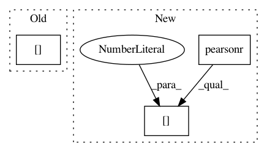

789676424d9767a82de32b02bb0db474ab06e972,skbio/stats/evolve/_hommola.py,,hommola_cospeciation,#Any#Any#Any#Any#,18
Before Change
// calculate shuffled correlation.
// If greater than observed value, iterate counter below.
r_p = pearsonr(x_p[sort], y_p[sort])[0]
perm_stats[i] = r_p
below = (perm_stats >= r).sum()
After Change
x_p = _get_dist(hosts_k_labels, hosts_t_labels, host_dist.data, mh)
// calculate shuffled correlation coefficient
perm_stats[i] = pearsonr(x_p, y_p)[0]
p_value = ((perm_stats >= corr_coeff).sum() + 1) / (permutations + 1)
return corr_coeff, p_value, perm_stats
In pattern: SUPERPATTERN
Frequency: 3
Non-data size: 3
Instances
Project Name: biocore/scikit-bio
Commit Name: 789676424d9767a82de32b02bb0db474ab06e972
Time: 2015-03-19
Author: jai.rideout@gmail.com
File Name: skbio/stats/evolve/_hommola.py
Class Name:
Method Name: hommola_cospeciation
Project Name: DistrictDataLabs/yellowbrick
Commit Name: 259b0063ed2ad16618fa647847dd905c23635728
Time: 2018-08-28
Author: 8103276+zjpoh@users.noreply.github.com
File Name: yellowbrick/target/feature_correlation.py
Class Name: FeatureCorrelation
Method Name: fit
Project Name: ContextLab/hypertools
Commit Name: 2df451029d31850d7f5353b3786b875f17f740a5
Time: 2018-04-06
Author: andrew.heusser@gmail.com
File Name: hypertools/tools/describe.py
Class Name:
Method Name: get_corr